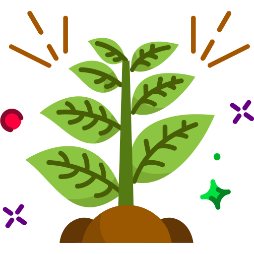

Plant Name

Discover the virtual Herbal Garden, Our Virtual Herbal Garden is more than just a digital resource – it’s an interactive experience designed to educate, inspire, and empower. Whether you’re a student, a healthcare professional, or simply curious about natural remedies, you’ll find a wealth of information at your fingertips.